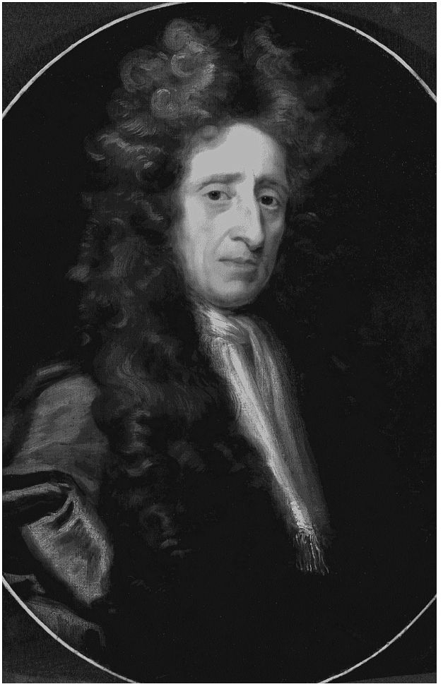
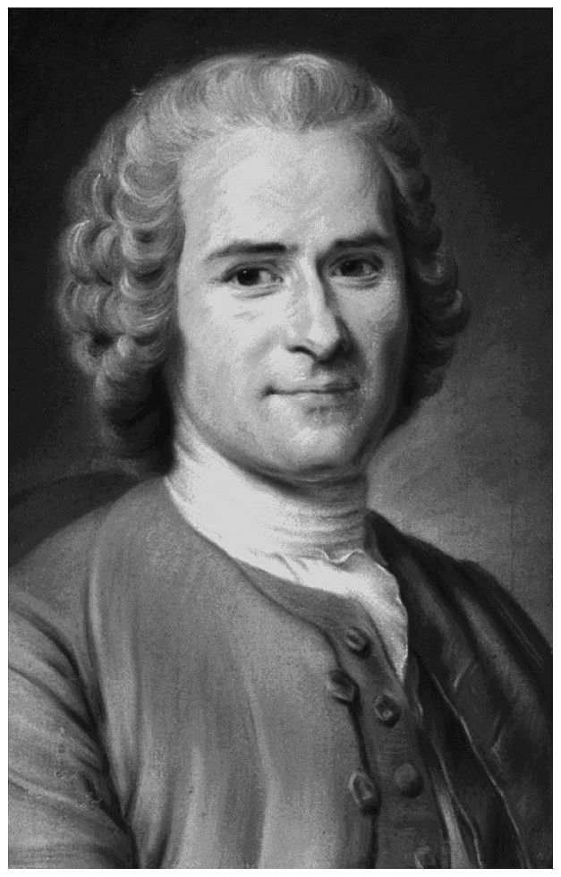

17世纪英国发生大变动以后，欧洲政治革命的第二个阶段是在1789年法国革命之前的一个世纪中出现的所谓的启蒙运动。启蒙运动一词源自以下事实：这一运动的领袖们认为他们生活在一个启蒙时代。他们将过去基本上看作一个迷信和无知的时代，认为只是到了他们的时代，人类才终于从黑暗走进光明。因而，启蒙时代的一个基本特点是有了“进步”这种一直持续到20世纪的观念。由于启蒙运动，人们开始普遍认为，人类的状况会稳步地改善，因此，每一代的境况都将比前一代更好。
这种不断的进步是如何保持的呢？答案非常简单而又令人信服：通过利用人类的理性力量。这种对理性的信任是启蒙运动的另一个基本特点。实际上，进步和理性是两个关键的概念。而这些概念的倡导者则是那些被通称为哲人的一批表达力很强的人。切莫将这些哲人误作正式的哲学家，因为他们不是任何特定领域的学识渊博或系统的思想家。他们多半是文人或普及工作者——与其说是哲学家，不如说是记者。他们通常反对现存的社会秩序，他们写剧本、小说、随笔和历史作品，以普及他们的思想，说明变革的必要性。

图190 约翰·洛克（1632—1704年），是人民权利的维护者，他反对那些认为自己拥有绝对权力的统治者。
这些哲人受被牛顿证实的万有引力定律的影响很大，相信存在着不仅控制物质世界而且控制人类社会的自然法则。按照这一设想，他们开始将理性应用于所有领域，以便发现种种有效的自然规则。他们使一切事物——所有的人、所有的制度、所有的传统——受到理性的检验。虽然这对任何时期的任何社会来说，都是一个严峻考验，但是，对于已过了全盛时期、许多关节嘎嘎作响的法国旧制度，是尤其严峻的考验。因而，这些哲人使法国和整个欧洲的旧制度受到毁灭性的批判的猛击。更重要的是，他们发展起一系列革命的原则，打算通过这些原则实现大规模的社会改革。其中特别使我们感兴趣的是他们在经济、宗教和政治三个领域中提出的一些具体建议。
他们在经济领域中的主要口号是自由放任——让人民做他们愿意做的事，让自然界自然地发展。这种对政府干涉的反对，是对严格管制经济生活（通常称为重商主义）的一种反应。在国家建设的早期阶段，重商主义被认为是国家安全所必需的。但是，到18世纪，它似乎是多余的，甚至是有害的。自由放任主义由苏格兰人亚当·斯密在其名著《国民财富的性质和原因的研究》（1776年）一书中作了出色的系统阐述。他论证说，就个人的经济活动而论，自我利益是个人活动的动机；国家的福祉只不过是在一个国家中起作用的个人利益的总和；每个人都比任何政治家更清楚地知道其自身的利益。

图191 让·雅克·卢梭（1712—1778年），提出了启蒙运动中一些最深刻的社会和伦理问题。
在宗教方面，主要口号是“砸烂可耻的东西”，即消灭宗教的狂热和不宽容。哲人们拒绝接受上帝支配世界并任意地决定人类的命运这种传统的信仰。相反，他们寻找一种与理智的判断相一致的自然宗教，结果产生了种种根本违背宗教正统观念的东西。有些人成为彻底的无神论者，否认上帝的存在，痛斥宗教是教士和政治家的工具。另外一些人成为不可知论者，既不肯定也不否定上帝的存在。不过多数人都是自然神论者，他们乐于赞同上帝存在并创造了世界的主张，但坚决认为，上帝创世后，允许世界按照某些自然法则运转而不加以干涉。因而，自然神论者能同时做两件不相容的事而双收其利。他们能接受上帝和基督教教义，同时，又能拒绝接受某些带有超自然色彩的东西，如圣灵感孕、耶稣的复活、基督的神性和《圣经》中的神启。这里值得指出的重要一点是，所有这些新的信条——无神论、不可知论和自然神论——反映了理性主义者对“天启”或“超自然”宗教的怀疑有了前所未有的增长。自基督教在欧洲获胜以来，基督教传统首次出现了明确的破裂。
同样，在政治方面，哲人们也有一个关键性的词语——“社会契约”。关于统治的契约论并不是一种新理论：英国政治理论家约翰·洛克在1690年发表的《政府论》一书中已系统地提出了这一理论。他将统治看作统治者与被统治者之间的一种政治契约。但是，法国哲学家让·雅克·卢梭把它改变成一种社会契约而非政治契约。在他看来，契约就是人民之间的一个协议。卢梭在其主要政治著作《社会契约论》（1762年）一书中，把统治权看作只是一种“代办权”，从而证明把人民的合法权利归还给拥有最高权力的人民这种革命是正当的。
以上简短的评述表明了启蒙运动对欧洲政治革命的意义。“砸烂可耻的东西”“自由放任”和“社会契约”这些口号破坏了传统的制度和习俗。此外，它们不仅对法国的现状，而且对整个欧洲甚至海外地区的现状，也是一个挑战。实际上，哲人们并不把自己看作法国人或欧洲人，而是把自己看作人类的成员。他们试图从全球的而非西方的角度来思考和行动。他们试图发现与牛顿的物质世界定律相当的普适法则。
虽然哲人们并未发现支配整个人类的永恒法则，但他们的著作确实影响了世界许多地区的爱好思考的人们。他们的最大的直接成就是说服欧洲的许多君主至少接受他们的某些学说。这些君主仍然坚持他们以天赋之权进行统治的理论，但是他们已改变了关于其统治目的的思想。政府权力仍然是君主们的天赋特权，但这时也已用于为人民谋利。因此，这些统治者被称为仁慈的专制君主。
这些仁慈的专制君主中最闻名的是普鲁士的腓特烈大帝（1740—1786年在位）、俄国的叶卡捷琳娜大帝（1762—1796年在位）和哈布斯堡帝国的约瑟夫二世（1765—1790年在位）。叶卡捷琳娜也许是最有口才的，常常说出启蒙运动的富有代表性的口号，如“所有公民在法律面前应当平等”“君主应为其人民服务”“一个国家若划分成少数大地产是很危险的”，等等。但是，叶卡捷琳娜和其同时代的君主们并不仅仅谈论改革。叶卡捷琳娜大大地改善了自己国家的行政制度和教育制度，腓特烈为促进普鲁士的农业做了大量工作，而开明的专制君主中最真诚、最认真的约瑟夫二世在其统治期间更是为了将其帝国改造得与新的原则相一致而把自己弄得筋疲力尽。不过，尽管这些统治者拥有极大的权力，取得的成就却很有限。他们的继承者常常破坏他们的成果，而教士和贵族则毫不退让地反对威胁其既得利益的种种改革。